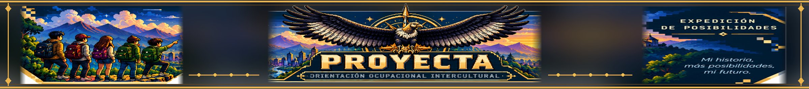

02
¿Qué tan capaz me siento?
IAMI-R · 48 afirmaciones · Respuestas de 1 a 10.
Explora la confianza que percibes para realizar diferentes actividades.

PROYECTA · Expedición de posibilidades
Dos cuestionarios para reflexionar sobre la confianza en tus capacidades y las dificultades que puedes encontrar al decidir. No hay notas, diagnósticos ni respuestas correctas.
IAMI-R · 48 afirmaciones · Respuestas de 1 a 10.
Explora la confianza que percibes para realizar diferentes actividades.
DTDC · 27 afirmaciones · Respuestas de 1 a 7.
Explora situaciones con las que te identificas al pensar en tu futuro.
Las respuestas se procesan únicamente en este navegador. No se envían automáticamente a PROYECTA, al colegio, a una base de datos ni a Google Sheets. Cuando termines, podrás imprimir el informe o guardarlo como PDF. Si recargas la página, perderás las respuestas.
El informe es descriptivo: una puntuación no decide qué estudiarás, no indica tu inteligencia y no clasifica a los estudiantes.